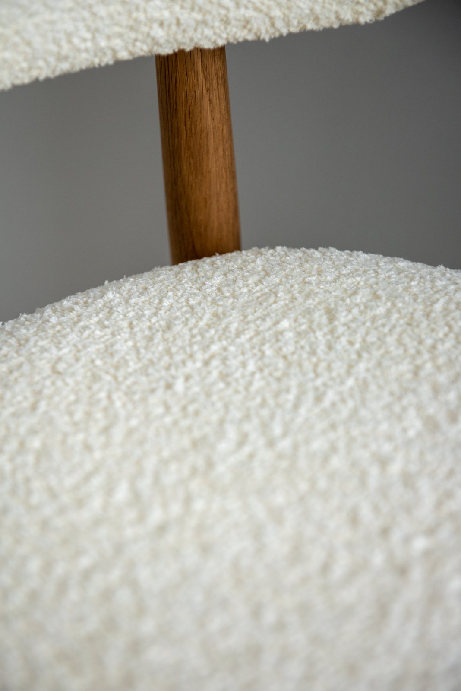

Пять способов выбрать
свою ткань
Коллекция, оттенок и личная подборка образцов — в индивидуальном оформлении каждого варианта.

Вариант 01
Спокойная галерея
Светлая карточка, крупный образец, тонкие линии и сдержанная типографика.
Открыть макет ↗
Вариант 02
Ткань во весь экран
Выразительная фотография во весь экран и мягкое движение при прокрутке.
Открыть макет ↗
Вариант 03
От цвета к ткани
Точный переход с цветовой стены, кресла-мозаики и вешалок коллекций.
Открыть макет ↗
Вариант 04
Текстильная мозаика
Фигуры из настоящих тканей складываются в композицию. Шесть коллекций, выбор оттенка и своя подборка.
Открыть макет ↗
Вариант 05
Альбом тканей
Книга-образцовник: все 53 коллекции по разделам, страницы листаются, а отмеченные образцы собираются на последнем развороте.
Открыть макет ↗